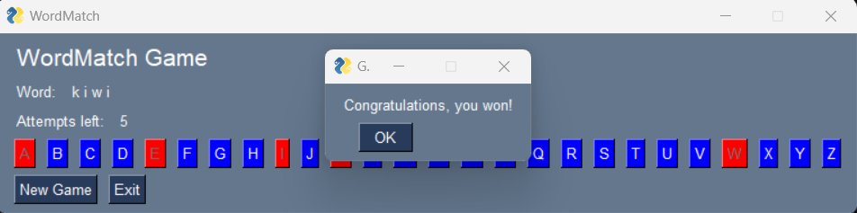

WordMatch is a classic word game where one player thinks of a word and the other tries to guess it by suggesting letters within a certain number of guesses.
We have defined the WordMatch Class with several methods. Please read through the code in wordmatch.py.
The random library is also used in this file to randomly choose a word from the list of possible words, which you are welcome to change.
The create_window function is responsible for setting up the graphical interface of the game.
Using PySimpleGUI, we create a window layout that includes text elements for the game title, the word to guess,
and the number of attempts left. There are also buttons for each letter of the alphabet to allow the player
to choose letters, and additional buttons to start a new game or exit.
def create_window(game):
layout = [
[sg.Text('WordMatch Game', font=('Helvetica', 16))],
[sg.Text('Word:'), sg.Text(' '.join(game.get_display_word()), key='-WORD-')],
[sg.Text('Attempts left:'), sg.Text(game.get_attempts_left(), key='-ATTEMPTS-')],
[sg.Button(c, key=c, button_color=('white', 'blue')) for c in 'ABCDEFGHIJKLMNOPQRSTUVWXYZ'],
[sg.Button('New Game', key='-NEW-'), sg.Button('Exit', key='-EXIT-')]
]
return sg.Window('WordMatch', layout)
The while True loop in the play_game function is the main loop of the game, which
continues to run until the game is over, either because the player has guessed the word or has run out of attempts.
The loop checks for events, such as button clicks, and updates the game state accordingly.
The window.close() method is called when the game loop ends, which closes the game window and
ends the PySimpleGUI program cleanly.
You can learn how to use GUI elements to interact with Python code, manage application state, and handle events in a loop. This knowledge can be applied to many other types of Python projects that require a graphical user interface.
In PySimpleGUI, each element in a window can be accessed via a unique identifier known as a "key". This allows for dynamic interaction with the GUI elements. The line of code in question demonstrates how to update an element's content:
window['-ATTEMPTS-'].update(game.get_attempts_left())This code performs two key actions:
window['-ATTEMPTS-'] selects the GUI element with the key '-ATTEMPTS-'. This key is a unique string that identifies a specific element within the window, in this case, a text element displaying the number of attempts left in a game of WordMatch.
.update() method changes the content of the selected element. game.get_attempts_left() calls a method from the WordMatch class instance to retrieve the current number of attempts left for the player. This value is then used to update the text displayed on the window.
A window key in PySimpleGUI is a powerful feature that allows developers to interact with the GUI elements after the window has been created. By assigning a key to an element, developers can:
Keys enable the creation of dynamic and responsive GUI applications, making PySimpleGUI an accessible library for both beginners and experienced developers looking to build interactive Python programs.
| Aspect | PySimpleGUI Keys | Dictionary Keys |
|---|---|---|
| Purpose | Interact with GUI elements. | Map to values in a data structure. |
| Data Association | Associated with GUI objects. | Associated with any data type. |
| Complexity | Part of UI event management. | Used for data storage and manipulation. |
| Scope | Specific to PySimpleGUI library. | Universal in Python, not limited to a specific library. |
Read more about PySimpleGUI keys here
In PySimpleGUI, the GUI layout is defined using lists of elements. Each list represents a row in the window, and each element within the list represents a component in that row. Let's break down the following line of code:
[sg.Text('Word:'), sg.Text(' '.join(game.get_display_word()), key='-WORD-')],This line of code is constructing a row with two text elements for our GUI:
sg.Text('Word:') creates a static text label that displays the text "Word:" to the user. This acts as a prompt for the dynamic content that follows.sg.Text(' '.join(game.get_display_word()), key='-WORD-') serves two purposes:
' '.join(game.get_display_word()) takes a list of characters representing the current state of the word to be guessed in the game (with letters still to be guessed shown as underscores) and joins them into a string with spaces. For example, if the word is "apple" and the letters "a" and "p" have been guessed, it would display "a p p _ _".
key='-WORD-' part assigns a unique identifier to this text element, which allows the GUI to update this element with new content when the game state changes (like when a new letter is guessed correctly).
This setup allows the WordMatch game's GUI to display the word to the user with guessed letters revealed and unguessed letters hidden. The unique key enables the program to find and update this specific text element throughout the game.
An event loop in PySimpleGUI is a control structure that listens for events such as button clicks or window close actions and responds accordingly. Here's an explanation of a typical event loop code snippet:
event, values = window.read()
if event == sg.WIN_CLOSED or event == '-EXIT-':
breakevent, values = window.read() waits for the user to perform an action.
event variable captures what the user did, such as clicking a button.values dictionary stores data from input fields, although it's not directly used in this snippet.if event == sg.WIN_CLOSED or event == '-EXIT-': checks if the user has either closed the window or clicked an 'Exit' button.
sg.WIN_CLOSED is a special event that occurs when the window's close button is clicked.'-EXIT-' is a custom event tied to a button with the key '-EXIT-'.break statement is executed, which terminates the nearest enclosing loop — in this case, the main event loop of the GUI.
This control flow allows the application to close gracefully when the user decides to exit, either by closing the window or clicking an 'Exit' button.
In PySimpleGUI, the event loop listens for events and executes code in response. Let's examine how the game handles two specific events:
if event == '-NEW-':
game.reset_game()
window['-WORD-'].update(game.get_display_word())
window['-ATTEMPTS-'].update(game.get_attempts_left())
for c in 'ABCDEFGHIJKLMNOPQRSTUVWXYZ':
window[c].update(button_color=('white', 'blue'), disabled=False)
elif event in 'ABCDEFGHIJKLMNOPQRSTUVWXYZ' and not game.has_lost():
game.guess_letter(event)
window['-WORD-'].update(game.get_display_word())
window['-ATTEMPTS-'].update(game.get_attempts_left())
window[event].update(button_color=('white', 'red'), disabled=True)
When the '-NEW-' event is triggered (typically by a button click), the following actions are taken:
game.reset_game(), which initializes a new game state.window['-WORD-'].update().window['-ATTEMPTS-'].update().When the player clicks a letter button (an event for any letter 'A' to 'Z'), and the player has not yet lost the game:
game.guess_letter(event).These event handlers are crucial for the interactivity of the game, responding to user inputs and updating the GUI accordingly.
Example of a popup when the game is won:

Relevant code snippet:
sg.popup('Congratulations, you won!', title='Game Over')